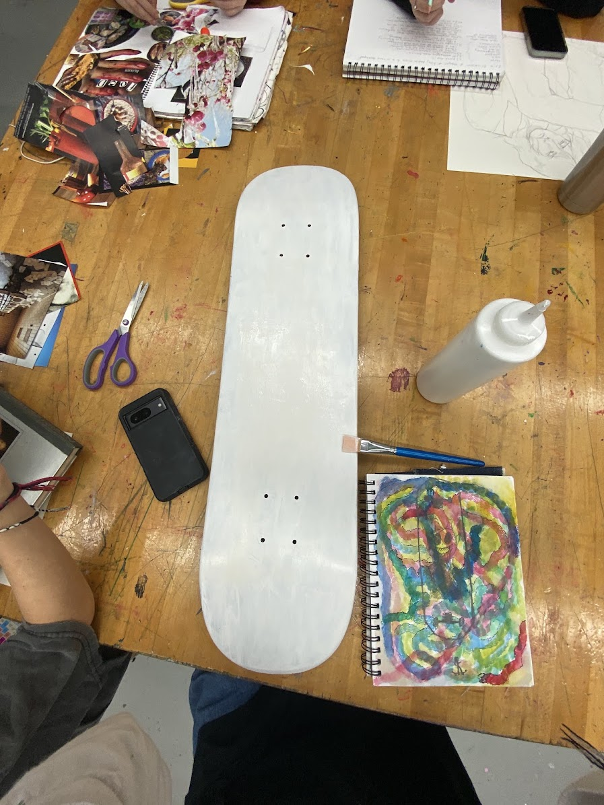
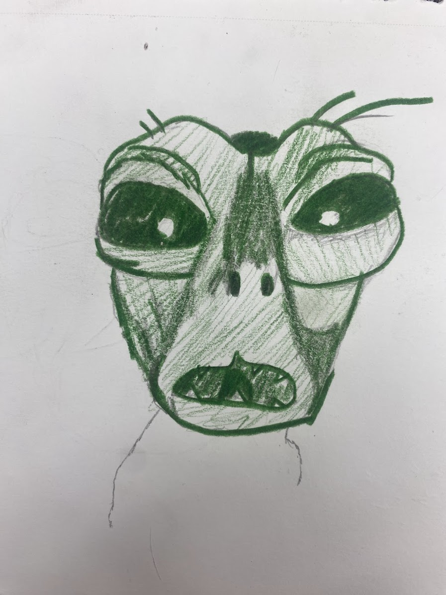
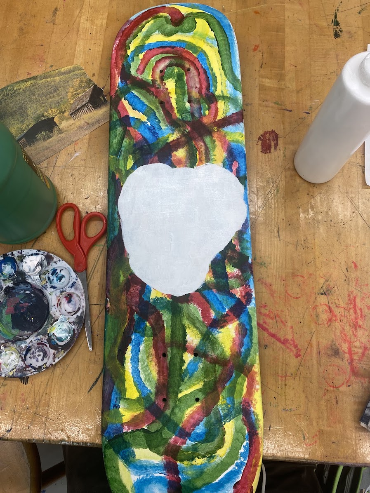
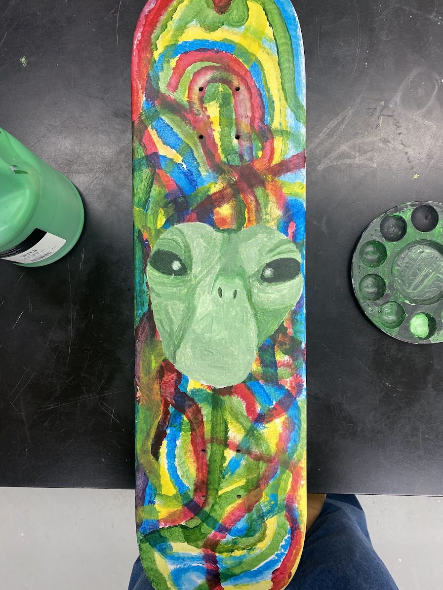
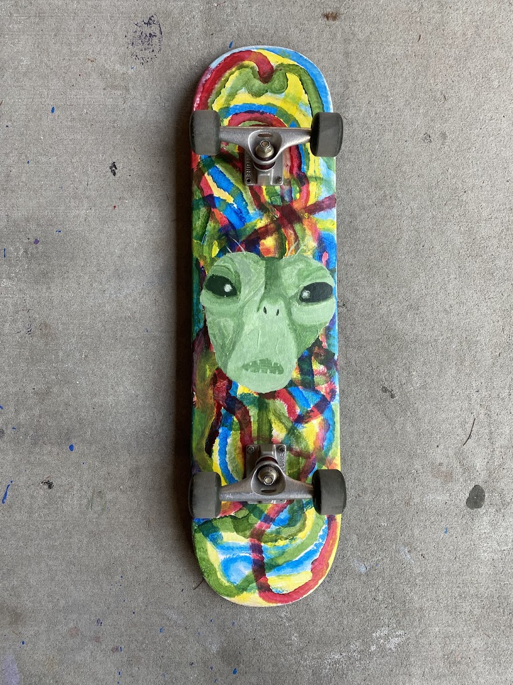

About the Project
This skateboard painting was created for an AP Art project about exploring people’s views on conspiracy theories and unknown ideas. For the project, I talked to different people about what they believe, what they think could exist, and how they imagine things that are not fully understood. I wanted to show that people can have very different ideas about the same subject. This piece is based on the perspective of someone who skates. I asked what they thought an alien might look like, and I used that idea to create the large green alien face in the center of the skateboard. The alien is not meant to look realistic. Instead, it is a personal interpretation of an unknown being, created through someone else’s imagination.
The Skateboard as a Canvas
I chose to paint on a skateboard because it connects the artwork directly to the person whose perspective inspired the piece. A skateboard is usually an object for movement, tricks, and self-expression. By using it as a canvas, I turned it into a place where a person’s ideas and imagination could be displayed. The shape of the board also affects the artwork. The tall, narrow surface makes the alien face feel stretched and noticeable. The design moves from the top of the board to the bottom, creating an image that is meant to be viewed as one complete object.




